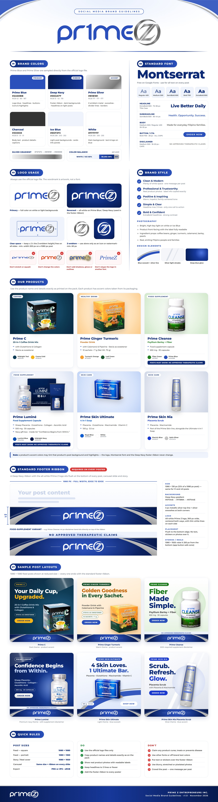

Colors, font, logo use, products, footer ribbon and post layouts. JPG, 2179 × 8000.

The primary logo with a transparent background, for white and light backgrounds. PNG, 1366 × 356.
All-white logo with a transparent background, for dark and Deep Navy backgrounds. PNG, 1362 × 352.
Required at the bottom of every poster. PNG, 1080 × 130.
For Pr1me Cleanse and Pr1me Lumine posts, with the "No approved therapeutic claims" band. PNG, 1080 × 174.